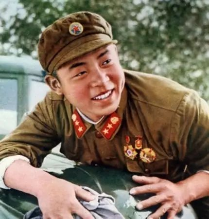
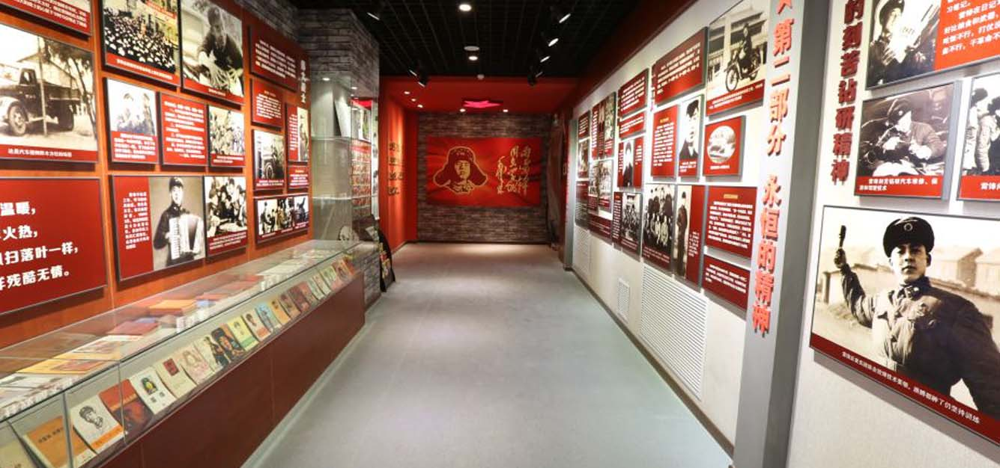
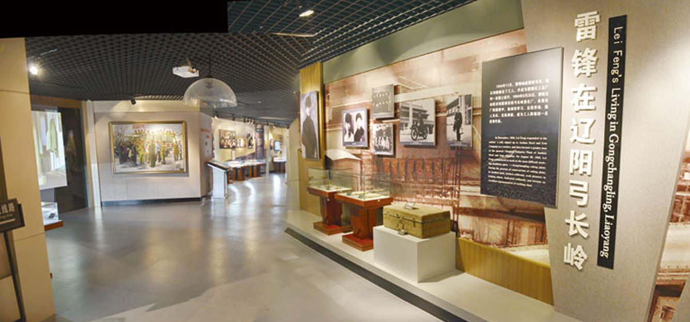
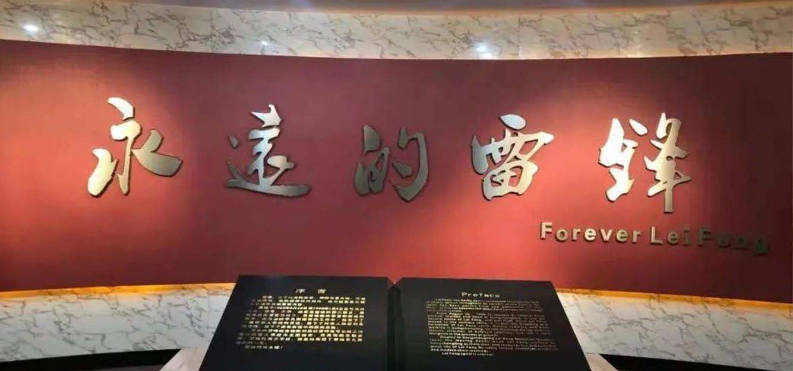
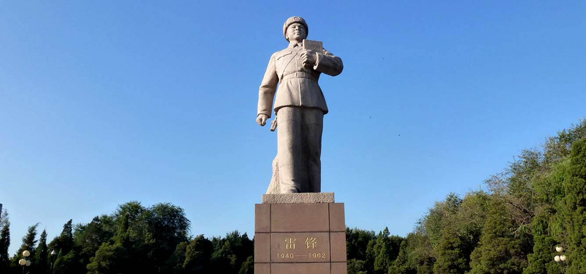
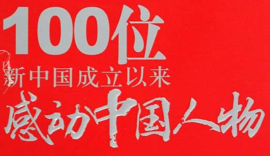
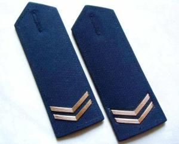

学习雷锋精神
人物简介
雷锋,原名雷正兴,出生于贫苦的农民家庭。解放后，怀着对党和人民的感激之情，甘当革命的“傻子”，把自己有限的生命投入到无限的为人民服务之中。他虽然只有小学文化，但刻苦学习科学文化知识，认真研读马克思主义理论，“雷锋日记”真实记录了他对党的事业的坚定信念。 他始终以“螺丝钉”精神，干一行、爱一行，最苦最累的活，他总是冲到最前面。 他乐于助人，关心同志，无论在部队，还是到外地，只要遇到别人有困难，他都尽全力帮助。
雷锋,原名雷正兴,出生于贫苦的农民家庭。解放后，怀着对党和人民的感激之情，甘当革命的“傻子”，把自己有限的生命投入到无限的为人民服务之中。他虽然只有小学文化，但刻苦学习科学文化知识，认真研读马克思主义理论，“雷锋日记”真实记录了他对党的事业的坚定信念。
雷锋纪念馆
- 
- 
- 
- 
获得荣耀
- 
- 
把雷锋精神代代传承下去

今天，在全面建设社会主义现代化国家新征程上奋勇前进，我们要把雷锋精神广播在祖国大地上，弘扬无私奉献、团结互助的理念，自觉服务社会、服务人民，在全社会形成人人学雷锋、人人做雷锋的生动局面，让雷锋精神在新时代绽放新光芒。